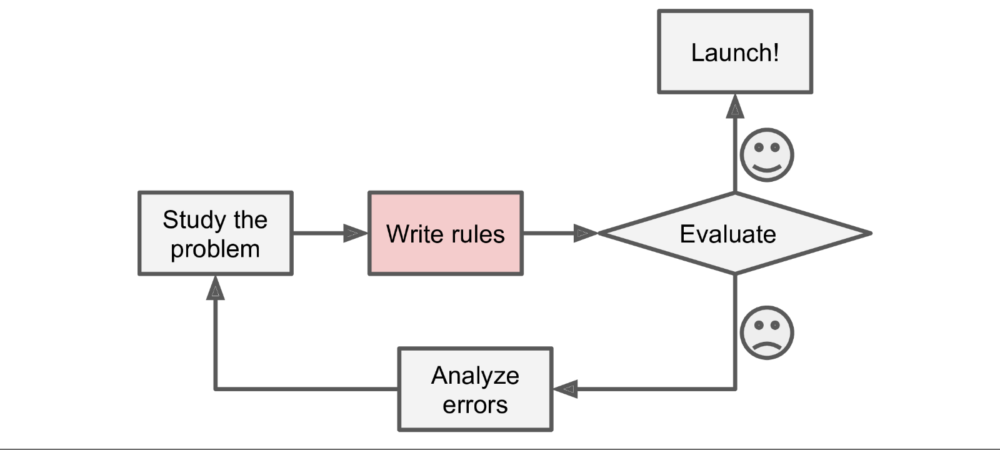
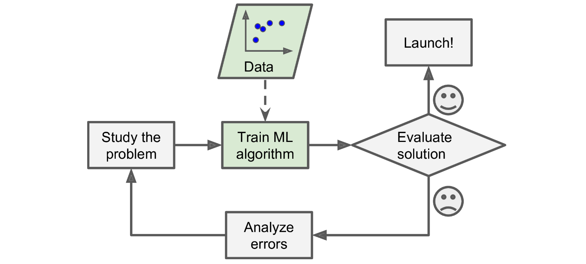
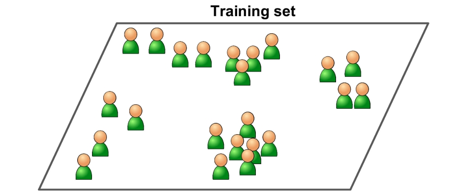
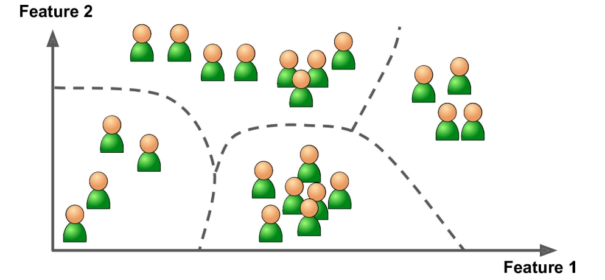
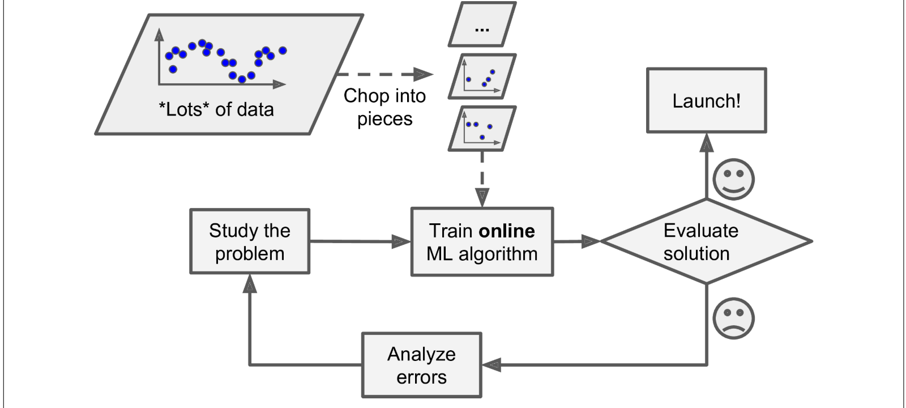
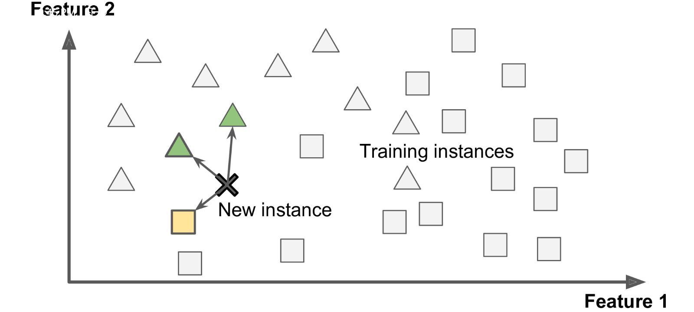
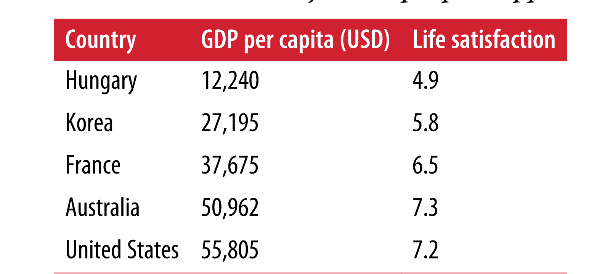
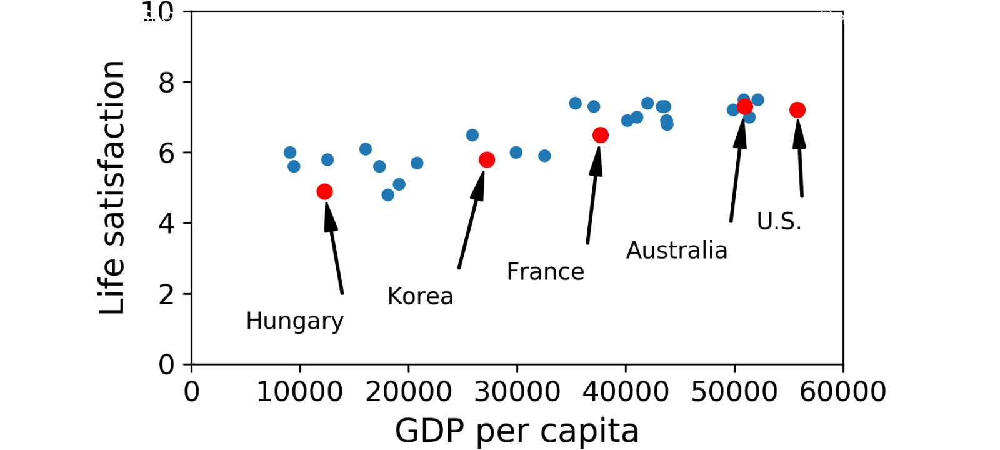
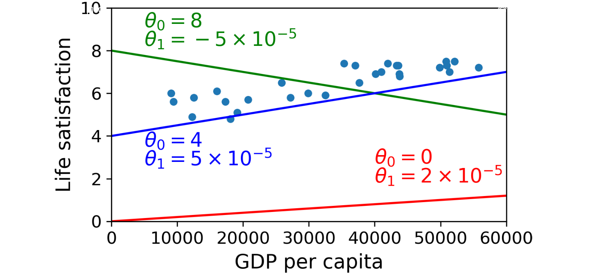
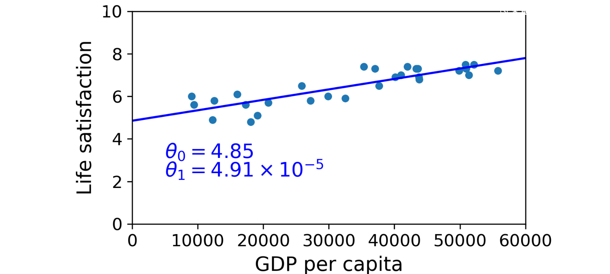

Machine Learning
How it came?
Explanation :
In 2006, Geoffrey Hinton et al. published a paper1 showing how to train a deep neural network capable of recognizing handwritten digits with state-of-the-art precision (>98%). They branded this technique “Deep Learning.” Training a deep neural net was widely considered impossible at the time,2 and most researchers had abandoned the idea since the 1990s. This paper revived the interest of the scientific community and before long many new papers demonstrated that Deep Learning was not only possible, but capable of mind-blowing achievements that no other Machine Learning (ML) technique could hope to match (with the help of tremendous computing power and great amounts of data). This enthusiasm soon extended to many other areas of Machine Learning.
Fast-forward 10 years and Machine Learning has conquered the industry: it is now at the heart of much of the magic in today’s high-tech products, ranking your web search results, powering your smartphone’s speech recognition, recommending videos, and beating the world champion at the game of Go. Before you know it, it will be driving your car.
What is Machine Learning?
Explanation :
Machine Learning is the science (and art) of programming computers so they can learn from data.
For example, your spam filter is a Machine Learning program that can learn to flag spam given examples of spam emails (e.g., flagged by users) and examples of regular (nonspam, also called “ham”) emails. The examples that the system uses to learn are called the training set. Each training example is called a training instance (or sample). In this case, the task T is to flag spam for new emails, the experience E is the training data, and the performance measure P needs to be defined; for example, you can use the ratio of correctly classified emails. This particular performance measure is called accuracy and it is often used in classification tasks.
If you just download a copy of Wikipedia, your computer has a lot more data, but it is not suddenly better at any task. Thus, it is not Machine Learning.
Why we use Machine Learning?
Explanation :
Consider how you would write a spam filter using traditional programming techniques-
1.First you would look at what spam typically looks like. You might notice that some words or phrases (such as “4U,” “credit card,” “free,” and “amazing”) tend to come up a lot in the subject. Perhaps you would also notice a few other patterns in the sender’s name, the email’s body, and so on.
2. You would write a detection algorithm for each of the patterns that you noticed, and your program would flag emails as spam if a number of these patterns are detected.
3. You would test your program, and repeat steps 1 and 2 until it is good enough.

Since the problem is not trivial, your program will likely become a long list of complex rules—pretty hard to maintain. In contrast, a spam filter based on Machine Learning techniques automatically learns which words and phrases are good predictors of spam by detecting unusually frequent patterns of words in the spam examples compared to the ham examples. The program is much shorter, easier to maintain, and most likely more accurate.

What are the Types of Machine Learning Systems
Explanation :
There are so many different types of Machine Learning systems that it is useful to classify them in broad categories based on:
Whether or not they are trained with human supervision (supervised, unsupervised, semisupervised, and Reinforcement Learning)
Whether or not they can learn incrementally on the fly (online versus batch learning)
Whether they work by simply comparing new data points to known data points, or instead detect patterns in the training data and build a predictive model, much like scientists do (instance-based versus model-based learning)
These criteria are not exclusive; you can combine them in any way you like. For example, a state-of-the-art spam filter may learn on the fly using a deep neural network model trained using examples of spam and ham; this makes it an online, modelbased, supervised learning system.
Let’s look at each of these criteria a bit more closely.
Supervised/Unsupervised Learning
Explanation :
Machine Learning systems can be classified according to the amount and type of supervision they get during training. There are four major categories: supervised learning, unsupervised learning, semisupervised learning, and Reinforcement Learning.
A typical supervised learning task is classification. The spam filter is a good example of this: it is trained with many example emails along with their class (spam or ham), and it must learn how to classify new emails.
Another typical task is to predict a target numeric value, such as the price of a car, given a set of features (mileage, age, brand, etc.) called predictors. This sort of task is called regression (Figure 1-6).1 To train the system, you need to give it many examples of cars, including both their predictors and their labels (i.e., their prices).
Here are some of the most important supervised learning algorithms:
• k-Nearest Neighbors
• Linear Regression
• Logistic Regression
• Support Vector Machines (SVMs)
• Decision Trees and Random Forests
• Neural networks2

Here are some of the most important unsupervised learning algorithms:
• Clustering
—K-Means
—DBSCAN
—Hierarchical Cluster Analysis (HCA)
• Anomaly detection and novelty detection
—One-class SVM
—Isolation Forest
• Visualization and dimensionality reduction
—Principal Component Analysis (PCA)
—Kernel PCA
—Locally-Linear Embedding (LLE)
—t-distributed Stochastic Neighbor Embedding (t-SNE)
• Association rule learning
—Apriori
—Eclat
For example, say you have a lot of data about your blog’s visitors. You may want to run a clustering algorithm to try to detect groups of similar visitors (Figure 1-8). At no point do you tell the algorithm which group a visitor belongs to: it finds those connections without your help. For example, it might notice that 40% of your visitors are males who love comic books and generally read your blog in the evening, while 20% are young sci-fi lovers who visit during the weekends, and so on. If you use a hierarchical clustering algorithm, it may also subdivide each group into smaller groups. This may help you target your posts for each group.

Batch and Online Learning
Explanation :
Another criterion used to classify Machine Learning systems is whether or not the system can learn incrementally from a stream of incoming data.
If you want a batch learning system to know about new data (such as a new type of spam), you need to train a new version of the system from scratch on the full dataset (not just the new data, but also the old data), then stop the old system and replace it with the new one.
if you have limited computing resources: once an online learning system has learned about new data instances, it does not need them anymore, so you can discard them (unless you want to be able to roll back to a previous state and “replay” the data).
This can save a huge amount of space.
Online learning algorithms can also be used to train systems on huge datasets that cannot fit in one machine’s main memory (this is called out-of-core learning). The algorithm loads part of the data, runs a training step on that data, and repeats the process until it has run on all of the data (see Figure 1).

One important parameter of online learning systems is how fast they should adapt to changing data: this is called the learning rate. If you set a high learning rate, then your system will rapidly adapt to new data, but it will also tend to quickly forget the old data (you don’t want a spam filter to flag only the latest kinds of spam it was shown).
Conversely, if you set a low learning rate, the system will have more inertia; that is, it will learn more slowly, but it will also be less sensitive to noise in the new data or to sequences of nonrepresentative data points (outliers).
Instance-Based And Model-Based Learning
Explanation :
One more way to categorize Machine Learning systems is by how they generalize. Most Machine Learning tasks are about making predictions. This means that given a number of training examples, the system needs to be able to generalize to examples it has never seen before. Having a good performance measure on the training data is good, but insufficient; the true goal is to perform well on new instances.
There are two main approaches to generalization: instance-based learning and model-based learning.

 For example, suppose you want to know if money makes people happy, so you download the Better Life Index data from the OECD’s website as well as stats about GDP per capita from the IMF’s website. Then you join the tables and sort by GDP per capita. Table 1-1 shows an excerpt of what you get.
For example, suppose you want to know if money makes people happy, so you download the Better Life Index data from the OECD’s website as well as stats about GDP per capita from the IMF’s website. Then you join the tables and sort by GDP per capita. Table 1-1 shows an excerpt of what you get.

Let’s plot the data for a few random countries (see Figure).

Although the data is noisy (i.e., partly random)

This is where the Linear Regression algorithm comes in: you feed it your training examples and it finds the parameters that make the linear model fit best to your data. This is called training the model.
Now the model fits the training data as closely as possible (for a linear model), as you can see in figure below.

You are finally ready to run the model to make predictions
import matplotlib.pyplot as plt
import numpy as np
import pandas as pd
import sklearn.linear_model
# Load the data
oecd_bli = pd.read_csv("oecd_bli_2015.csv", thousands=',')
gdp_per_capita = pd.read_csv("gdp_per_capita.csv",thousands=',',delimiter='\t', encoding='latin1', na_values="n/a")
# Prepare the data
country_stats = prepare_country_stats(oecd_bli, gdp_per_capita)
X = np.c_[country_stats["GDP per capita"]]
y = np.c_[country_stats["Life satisfaction"]]
# Visualize the data
country_stats.plot(kind='scatter', x="GDP per capita", y='Life satisfaction') plt.show()
# Select a linear model
model = sklearn.linear_model.LinearRegression()
# Train the model
model.fit(X, y)
# Make a prediction for Cyprus
X_new = [[22587]] # Cyprus' GDP per capita
print(model.predict(X_new)) # outputs [[ 5.96242338]]Explanation :
The code you provided demonstrates a simple linear regression analysis using the data from two CSV files: "oecd_bli_2015.csv" and "gdp_per_capita.csv".
Let's break down the code step by step:
1.
2.
3.
4.
5.
6.
7.
8.
9.
10.
11.
12.
13.
14.
15.
The result is then printed using `
Project - 1
To perform a basic prediction on the Iris dataset using the sklearn library, you can follow these steps:
import pandas as pd
from sklearn.model_selection import train_test_split
from sklearn.linear_model import LogisticRegression
from sklearn.metrics import accuracy_score
from sklearn.datasets import fetch_openml
# Load the Iris dataset
iris_data = fetch_openml(name='iris', as_frame=True)
# Extract the data and target variables
X = iris_data['data'][['sepallength']].values.reshape(-1, 1)
y = pd.cut(iris_data['data']['petallength'], bins=3, labels=[0, 1, 2])
# Split the data into training and testing sets
X_train, X_test, y_train, y_test = train_test_split(X, y, test_size=0.2, random_state=42)
# Create an instance of the Logistic Regression model
model = LogisticRegression()
# Train the model on the training data
model.fit(X_train, y_train)
# Make predictions on the test data
y_pred = model.predict(X_test)
# Calculate the accuracy of the model
accuracy = accuracy_score(y_test, y_pred)
print("Accuracy:", accuracy)
The code above imports the Iris dataset using the `fetch_openml` function, splits the data into training and testing sets, creates a logistic regression model, trains the model, makes predictions on the test data, and calculates the accuracy of the model.
Make sure you have the Iris dataset CSV file available in your working directory or specify the correct file path in the `fetch_openml` function.
Project 2
import pandas as pd
from sklearn.datasets import fetch_openml
from sklearn.model_selection import train_test_split
from sklearn.linear_model import LinearRegression
from sklearn.metrics import r2_score
# Fetch the Wine dataset
wine_data = fetch_openml(name='wine', as_frame=True)
# Create a DataFrame from the fetched data
wine_df = pd.DataFrame(data=wine_data['data'], columns=wine_data['feature_names'])
wine_df['target'] = wine_data['target']
# Split the data into features (X) and target (y)
X = wine_df[['Alcohol']].values
y = wine_df['Color_intensity'].values
# Split the data into training and testing sets
X_train, X_test, y_train, y_test = train_test_split(X, y, test_size=0.2, random_state=24)
# Create an instance of the Linear Regression model
model = LinearRegression()
# Train the model on the training data
model.fit(X_train, y_train)
# Make predictions on the test data
y_pred = model.predict(X_test)
# Calculate the coefficient of determination (R^2 score)
r2 = r2_score(y_test, y_pred)
print("R^2 Score:", r2)
Project 3
import pandas as pd
from sklearn.linear_model import LinearRegression
from sklearn.datasets import fetch_openml
# Fetch a dataset (e.g., 'electricity') from OpenML
dataset = fetch_openml(name='electricity', as_frame=True)
# Convert the dataset to a DataFrame
df = pd.DataFrame(dataset['data'], columns=dataset['feature_names'])
df['target'] = dataset['target']
# Extract the 'nesprice' and 'vicprice' columns for prediction
X = df[['nswprice']].values.reshape(-1, 1)
y = df[['vicprice']].values.reshape(-1, 1)
# Create an instance of the Linear Regression model
model = LinearRegression()
# Train the model on the entire data
model.fit(X, y)
# Predict a single value
new_nesprice = [[0.056443]] # Provide the new 'nswprice' value for prediction
predicted_vicprice = model.predict(new_nesprice)
print("Predicted vicprice:", predicted_vicprice)
Method to extract more datasets
# available datasets
dataset_names = ['eeg-eye-state', 'bank-marketing', 'diabetes', 'boston', 'credit-g', 'letter-recognition',
'california', 'iris', 'steel-plates-fault', 'vehicle', 'abalone', 'arrhythmia', 'balance-scale',
'glass', 'ionosphere', 'mushroom', 'wine-quality-red', 'yeast', 'zoo', 'forest-fires']Explanation : Above are the dataset names, you have replace with bank-marketing below in your code.
import pandas as pd
from sklearn.datasets import fetch_openml
from sklearn.model_selection import train_test_split
from sklearn.linear_model import LinearRegression
from sklearn.metrics import r2_score
# Fetch the Wine dataset
Data = fetch_openml(name='bank-marketing', as_frame=True)
# Create a DataFrame from the fetched data
Final_Data = pd.DataFrame(data=Data['data'], columns=Data['feature_names'])
Final_Data.head(10)Explanation :
Explanation :
Explanation :
Explanation :
Explanation :
Explanation :
Explanation :
Explanation :
Explanation :
Explanation :
Explanation :
Explanation :